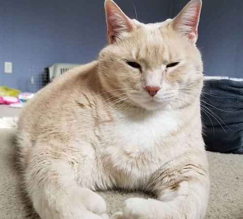
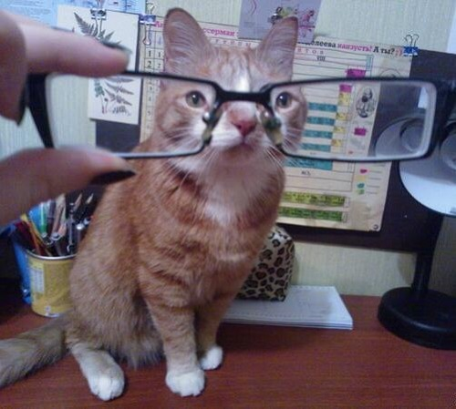
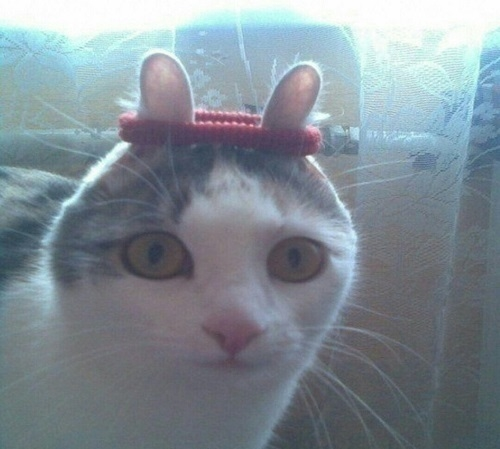
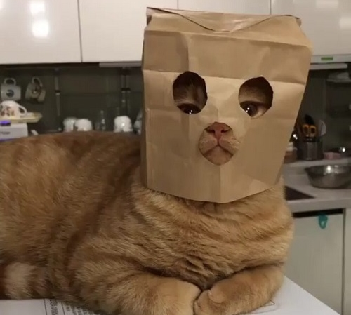
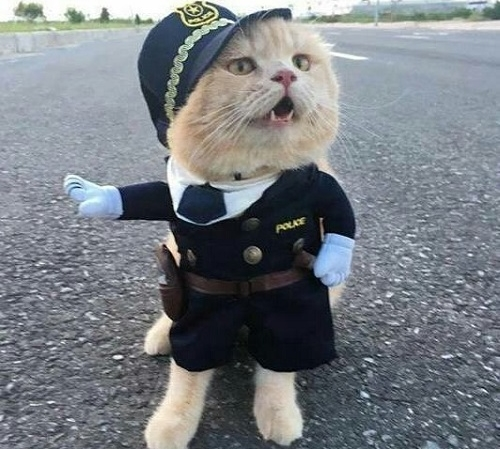
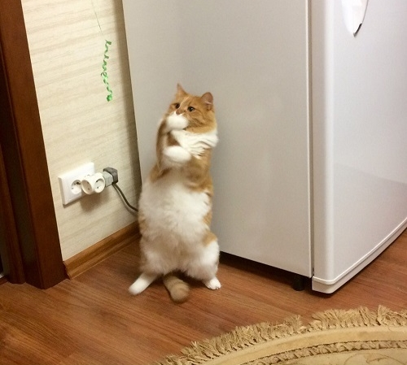
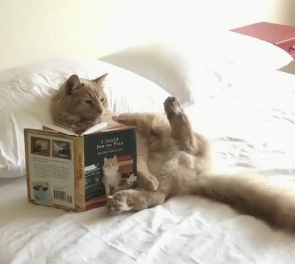
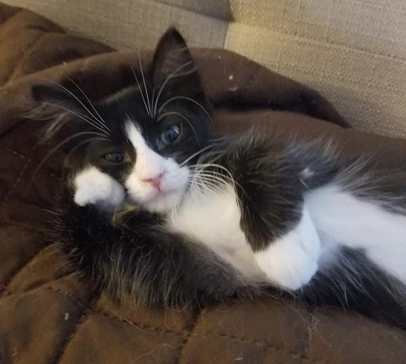
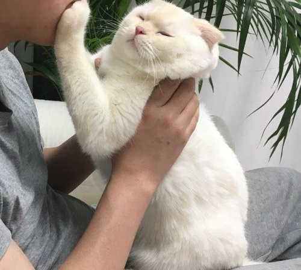
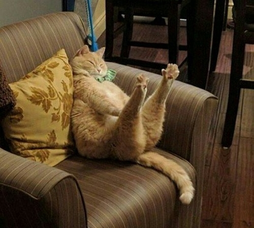

Арнольд
- Возраст: 1 год
- Порода: нет
- Болезни: нет
Чемпион.
Подминает по себя не только котов, но и людей.
Не боится даже пылесоса.
Леопольд
- Возраст: 8 месяцев
- Порода: нет
- Болезни: плохое зрение
Ученый.
Может найти не только свой лоток, но и любой элемент в таблице Минделеева.
Планирует стать автообзорщиком.
Морана
- Возраст: 6 месяцев
- Порода: нет
- Болезни: нет
Модница.
Красотка.
Её приглашал на интервью сам Юрий Дуд.
Жожо
- Возраст: 3 года
- Порода: нет
- Болезни: нет
Красавец.
Хорошо ладит с коробками.
Хорошо ладит с бумажными пакетами.
Жибер
- Возраст: 7 лет
- Порода: нет
- Болезни: глух на левое ухо
Кот - катастрофа.
Любит участвовать в погонях.
С ним вы точно не заскучаете.
Сакрамар
- Возраст: 5 лет
- Порода: нет
- Болезни: нет
Художник.
Разбирается в искусстве.
Станет навсегда вашим другом (если его вовремя кормить).
Казан
- Возраст: 3 года
- Порода: нет
- Болезни: лишний вес
Гений.
Умеет читать.
Читает в основном кулинарные рецепты.
Лагман
- Возраст: 1.5 года
- Порода: нет
- Болезни: дистрофия
Меланхолик.
Очень задумчивый, любит погрустить.
Подойдет тем, кто сможет зарядить его своим позитивом.
Моника
- Возраст: 9 месяцев
- Порода: нет
- Болезни: нет
Красотка.
Просто посмотрите на ёё шерсть.
А на эти огроменный лапы.
Наруто
- Возраст: 9 лет
- Порода: нет
- Болезни: невроз
Боец.
Очень добрый и справедливый.
Долго привыкает к новым людям, но своих друзей никогда не предаст.